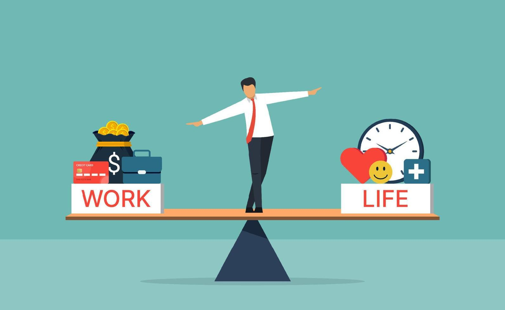
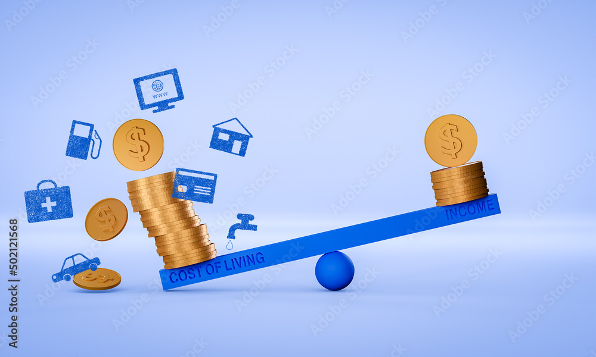
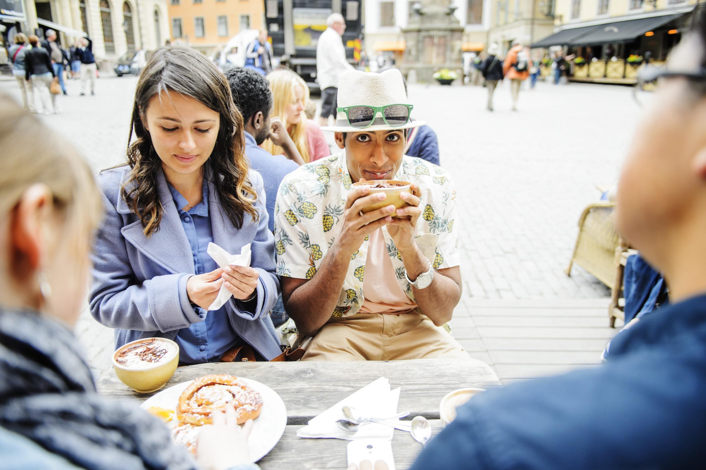
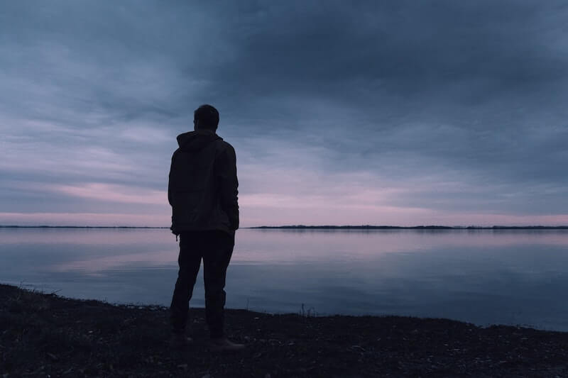

Life Style in Sweeden |
||
| Home | Life style | Cultura Suecia | Sweden Sports | ||
| Work–life balance |  |
Shorter working hours than many countries At least 25 paid vacation days by law Strong parental leave (for both parents) Overtime culture is minimal — leaving work on time is normal |
| Healthcare & education | Universal healthcare: high quality, low cost (though wait times can happen for non-urgent care) Education is free, including universities for EU citizens Very strong focus on child welfare and education quality |
|
| Income & cost of living |  |
Salaries are generally good, and income inequality is low Cost of living is high, especially housing, food, and eating out Taxes are high, but they pay for healthcare, education, transit, childcare, etc.
|
| Environment & lifestyle |  |
Super clean cities, lots of green space Easy access to nature — forests, lakes, and coastlines Strong environmental awareness and sustainability Excellent public transport; many people bike year-round (yes, even in winter) |
| The downsides |  |
Making close friends can take time, especially as a newcomer Housing shortages in big cities like Stockholm and Gothenburg Bureaucracy can be slow and very rule-focused |
| Copy right Santiago del Rio 2026© | ||